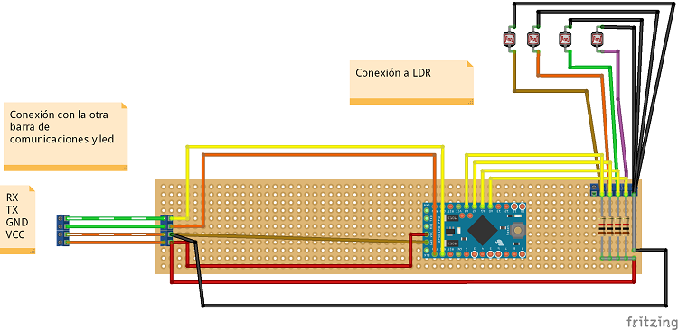
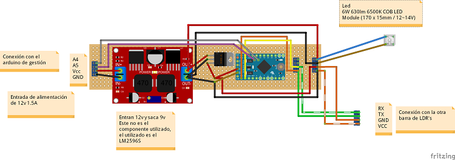
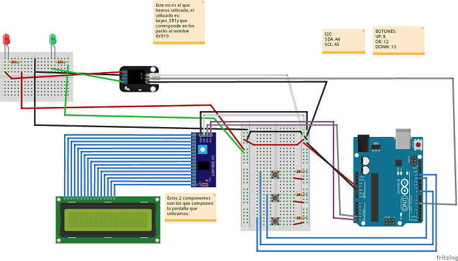
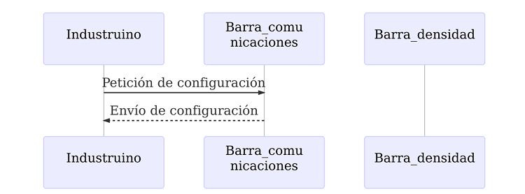
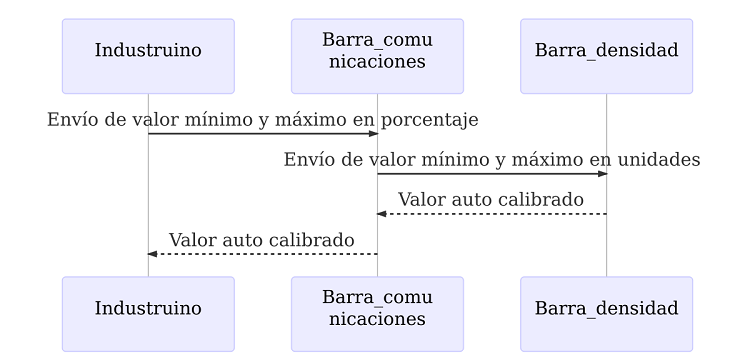
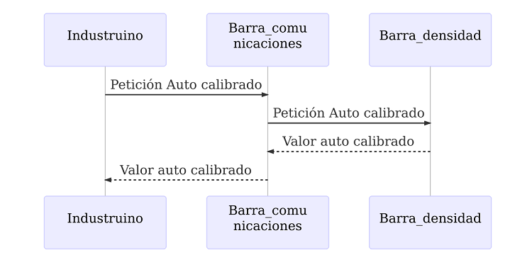
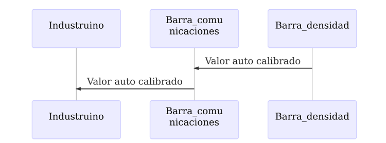
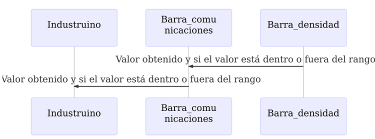

Sistema de detección de la densidad del material usado para crear las toallitas húmedas con Arduino 2/2
Construcción del prototipo final
Componentes usados
Los componentes usados han sido, por módulo:
Barra de densidad
- 1 - Arduino Pro Mini 5v
- 4 - LDRs
- 4 - Resistencias 1k
- 2 - Bloques Terminales para PCB
Barra de comunicaciones
Industruino
Arduino con pantalla
- 1 - Arduino UNO R3
- 1 - Pantalla LCD de 16x2 con I2C
- 3 - Resistencias 10k
- 2 - Resistencias 220
- 1 - LED Rojo
- 1 - LED Verde
- 3 - Botones
- 1 - Modulo relé Keyes_SR1
Montaje del circuito
El esquema en Fritzing es el siguiente:
- Barra de densidad

Este circuito se encarga de obtener las mediciones y enviar notificaciones a la barra de comunicaciones para que las redirija.
- Barra de comunicaciones

Este circuito se encarga de las comunicaciones de la barra de densidad, además de la alimentación eléctrica de la barra y todos los componentes que contiene.
- Arduino con pantalla

Este montaje es el realizado para sustituir al Industruino que se quemó.
Software: Funcionalidad a implementar y diseño del protocolo utilizado
En este apartado se comenta la funcionalidad que cumple el software creado y el protocolo de mensajería que se ha diseñado para que la comunicación cumpla con la funcionalidad deseada.
La funcionalidad del software implementado es la siguiente:
- Auto calibración de los sensores de luz. Este paso se ha de realizar automáticamente al arrancar la barra de densidad o cuando el usuario lo pida.
- A partir de un valor medio de luz que se considere como válido (la calidad del producto es la correcta) se le han de indicar un porcentaje superior y uno inferior, dentro de los cuales el producto se considera que contiene la calidad deseada. El valor válido se obtendrá desde el auto calibrado.
- A partir de los datos de los 2 puntos anteriores enviar una señal si el producto no está dentro de la calidad deseada.
Cada una de las barras se encarga de una o varias funcionalidades y el Industruino(y posteriormente el Arduino con pantalla) de otras, estas son:
- Industruino / Arduino con pantalla:
- Configuración de los porcentajes a aplicar al valor medio de calidad.
- Activar la señal de aviso si recibe la notificación de que se ha encontrado algún trozo que no cumple la calidad.
- Petición de configuración de la barra de densidad.
- Barra de densidad
- Ejecución del auto calibrado, ya sea al arrancar o cuando se le pida.
- Realizar las mediciones y avisar si alguna está fuera de rango.
- Barra de comunicaciones
- Intermediario entre la barra de densidad y el Industruino, dentro de este rol se encarga de:
- Convertir los porcentajes pasados por el Industruino a valores dentro del rango de medición y comunicárselos a la barra de densidad.
- Pedir a la barra de densidad los valores requeridos por el Industruino y transformándolos si es necesario.
- Filtrar los avisos de la barra de densidad al Industruino, sólo avisa al Industruino si ha habido un cambio
- Intermediario entre la barra de densidad y el Industruino, dentro de este rol se encarga de:
Para la comunicación entre las barras se diseñó el siguiente protocolo de mensajería:
- Peticiones desde el Industruino
- Petición de configuración actual de barra. 
- Datos de reconfiguración para la barra (datos modificados en Industruino y enviados a las barras). 
- Petición de auto calibrado de barra. 
- Envíos al Industruino, independientes a los anteriores como respuesta a una petición de éste
- Envío de información de auto calibrado (el primer arranque de la barra siempre realiza un auto calibrado, sin que se lo pida el Industruino) 
- Envío de datos sobre las lecturas. Sólo se envía cuando hay un cambio entre dentro o fuera del rango. 
Librerías usadas en cada Arduino:
En este apartado se enumeran cada una de las librerías que se han creado y las que se han usado para cada uno de los Arduinos que componen el proyecto.
Barra de densidad
- EasyTransfer: librería usada para las comunicaciones entre barras.
- Librerías internas: creadas por nosotros y usadas para facilitar la programación.
- CommunicationStructures.h: usada para contener las estructuras de datos que se enviaban entre Arduinos.
- EEPROMAnything.h: usada para la gestión de datos que se guardaban en la EEPROM. Obtenida a partir de la siguiente URL: http://playground.Arduino.cc/Code/EEPROMWriteAnything
- I2C_Anything.h: usada para la gestión de lectura y escritura sobre el puerto I2C. Obtenida a partir de la siguiente URL: http://forum.Arduino.cc/index.php?topic=104732.0.
Barra de comunicaciones
- Wire: librería usada para las conexiones I2C.
- EasyTransfer: librería usada para las comunicaciones.
- Librerías internas: creadas por nosotros y usadas para facilitar la programación.
- CommunicationStructures.h: usada para contener las estructuras de datos que se enviaban entre Arduinos.
- EEPROMAnything.h: usada para la gestión de datos que se guardaban en la EEPROM. Obtenida a partir de la siguiente URL: http://playground.Arduino.cc/Code/EEPROMWriteAnything
- I2C_Anything.h: usada para la gestión de lectura y escritura sobre el puerto I2C. Obtenida a partir de la siguiente URL: http://forum.Arduino.cc/index.php?topic=104732.0
Industruino
- U8glib: librería usada para pintar en la pantalla del Industruino. Obtenida a partir de la siguiente URL: https://github.com/olikraus/u8glib
- M2tklib: librería usada para pintar los menús en la pantalla del Industruino. Obtenida a partir de la siguiente URL: https://github.com/olikraus/m2tklib
- Wire: librería usada para las conexiones I2C.
- EasyTransfer: librería usada para las comunicaciones.
- Librerías internas: creadas por nosotros y usadas para facilitar la programación.
- CommunicationStructures.h: usada para contener las estructuras de datos que se enviaban entre Arduinos.
- EEPROMAnything.h: usada para la gestión de datos que se guardaban en la EEPROM. Obtenida a partir de la siguiente URL: http://playground.Arduino.cc/Code/EEPROMWriteAnything
- I2C_Anything.h: usada para la gestión de lectura y escritura sobre el puerto I2C. Obtenida a partir de la siguiente URL: http://forum.Arduino.cc/index.php?topic=104732.0
Arduino con pantalla
- LiquidCrystal: librería usada para pintar en la pantalla del Arduino. Obtenida a partir de la siguiente URL: https://bitbucket.org/fmalpartida/new-liquidcrystal/downloads/
- Wire: librería usada para las conexiones I2C.
- EasyTransfer: librería usada para las comunicaciones.
- Librerías internas: creadas por nosotros y usadas para facilitar la programación.
- CommunicationStructures.h: usada para contener las estructuras de datos que se enviaban entre Arduinos.
- EEPROMAnything.h: usada para la gestión de datos que se guardaban en la EEPROM. Obtenida a partir de la siguiente URL: http://playground.Arduino.cc/Code/EEPROMWriteAnything
- I2C_Anything.h: usada para la gestión de lectura y escritura sobre el puerto I2C. Obtenida a partir de la siguiente URL: http://forum.Arduino.cc/index.php?topic=104732.0
El código del Arduino es el siguiente:
Para comprobar la dirección I2C de los elementos que usaban este protocolo se ha usado el programa llamado Arduino I2c Scanner.
Librería interna
Esta no es una librería de Arduino, si no, es un grupo de utilidades y definición de estructuras de datos que se usan por el resto de programas de Arduino que se usan en el proyecto.
Estas clases están situadas dentro de la carpeta \\Usuario\Documentos\Arduino\libraries, en nuestro caso hemos creado una carpeta allí dentro con el nombre utilidades_barras.
Los ficheros que la componen son:
CommunicationStructures.h
Este fichero contiene las estructuras de datos que se usan para las comunicaciones entre Arduinos.
#include <Arduino.h>
/*
Las operaciones que se envían entre el Industruino y las barras pueden ser los siguientes:
1 - Petición de configuración de barra.
2 - Datos de reconfiguración de barra (datos modificados en Industruino y enviados a las barras).
3 - Petición de auto calibrado de barra.
*/
// Número de LDR's
#define NUM_LDR 4
/*
Configuración de un LDR
*/
struct config_LDR
{
int valorMedio;
int valorUmbralSup;
int valorUmbralInf;
};
/*
Valores de un LDR
*/
struct valores_LDR
{
int valorActual;
int valorAnterior;
};
/*
Estructura de datos para comunicación entre barra de comunicaciones y barra de densidad
*/
struct datos_densidad_barraCom_barraDens
{
int operacion;
config_LDR confLDR[NUM_LDR];
int UmbralSup;
int UmbralInf;
};
/*
Estructura de datos para comunicación entre barra de densidad y barra de comunicaciones
*/
struct datos_densidad_barraDens_barraCom
{
boolean saldo;
valores_LDR valLDR[NUM_LDR];
//Para cuando se auto calibra la barra
boolean cambios; // Indica si se devuelven cambios de configuración o datos.
config_LDR confLDR[NUM_LDR];
};
/*
Estructura de datos para comunicación entre Industruino y barra de comunicaciones
*/
struct datos_densidad_Industruino_barraCom
{
int operacion;
int UmbralSup;
int UmbralInf;
};
/*
Estructura de datos para comunicación entre barra de comunicaciones y Industruino
*/
struct datos_densidad_barraCom_Industruino
{
int tipo; //Tipo de barra.
int tipoRespuesta; // Valores posibles: 1 - Respuesta a petición de configuración o a auto calibrado, 2 - Respuesta con datos.
boolean saldo;
valores_LDR valLDR[NUM_LDR];
int UmbralSup;
int UmbralInf;
};
EEPROMAnything.h
Este fichero se usa para la gestión de datos que se guardan en la EEPROM. Ha sido obtenida a partir de la información contenida en la siguiente página de la web de Arduino: http://playground.Arduino.cc/Code/EEPROMWriteAnything.
#include <EEPROM.h>
#include <Arduino.h> // for type definitions
template <class T> int EEPROM_writeAnything(int ee, const T& value)
{
const byte* p = (const byte*)(const void*)&value;
unsigned int i;
for (i = 0; i < sizeof(value); i++)
EEPROM.write(ee++, *p++);
return i;
}
template <class T> int EEPROM_readAnything(int ee, T& value)
{
byte* p = (byte*)(void*)&value;
unsigned int i;
for (i = 0; i < sizeof(value); i++)
*p++ = EEPROM.read(ee++);
return i;
}
void EEPROM_clear()
{
// write a 0 to all 512 bytes of the EEPROM
for (int i = 0; i < 512; i++)
EEPROM.write(i, 0);
}
I2C_Anything.h
Este fichero se usa para la gestión de lectura y escritura sobre el puerto I2C. Ha sido obtenida a partir de la información contenida en la siguiente entrada del blog de Arduino: http://forum.Arduino.cc/index.php?topic=104732.0
// Written by Nick Gammon
// May 2012
#include <Arduino.h>
#include <Wire.h>
template <typename T> unsigned int I2C_writeAnything (const T& value)
{
const byte * p = (const byte*) &value;
unsigned int i;
for (i = 0; i < sizeof value; i++)
Wire.write(*p++);
return i;
} // end of I2C_writeAnything
template <typename T> unsigned int I2C_readAnything(T& value)
{
byte * p = (byte*) &value;
unsigned int i;
for (i = 0; i < sizeof value; i++)
*p++ = Wire.read();
return i;
} // end of I2C_readAnything
Barra de densidad
Los ficheros que componen este proyecto/programa son:
- barra_densidad.ino: Este fichero es el fichero base del proyecto y contiene los siguientes elementos:
- Métodos básicos de un programa en Arduino (setup y loop).
- Declaración e inicialización de variables globales.
- Declaración de estructuras de datos internas al programa.
- datos_densidad.ino: Este fichero contiene las estructuras de datos con la información de la barra de densidad y la gestión de estas.
- datos_LDR.ino: Este fichero contiene la gestión de configuración y acceso a datos de los LDRs, adicionalmente cuando obtiene los datos de los LDRs los procesa.
Pueden consultarse y obtenerse desde la siguiente url de la web de Arduino Create: https://create.arduino.cc/editor/juaalta/f1582038-8bc2-4954-b314-7a588bcfdb62/preview.
Barra de comunicaciones
Los ficheros que componen este proyecto/programa son:
- barra_densidad_conector.ino: Este fichero es el fichero base del proyecto y contiene los siguientes elementos:
- Métodos básicos de un programa en Arduino (setup y loop).
- Declaración e inicialización de variables globales.
- Declaración de estructuras de datos internas al programa.
- datos_densidad.ino: Este fichero contiene las estructuras de datos con la información de la barra de densidad y la gestión de estas.
Pueden consultarse y obtenerse desde la siguiente url de la web de Arduino Create: https://create.arduino.cc/editor/juaalta/000576a7-42f4-4b74-bb22-ea69ef1e2e21/preview
Industruino
Los ficheros que componen este proyecto/programa son:
- Industruino.ino: Este fichero es el fichero base del proyecto y contiene los siguientes elementos:
- Métodos básicos de un programa en Arduino (setup y loop).
- Declaración e inicialización de variables globales.
- Declaración de estructuras de datos internas al programa.
- Industruino_I2c.ino: Este fichero contiene la gestión de las comunicaciones I2C.
- Industruino_Menu.ino: Este fichero contiene el pintado y gestión del menú del programa.
- Industruino_Pantalla.ino: Este fichero contiene la gestión de la pantalla.
- Industruino_datos.ino: Este fichero contiene la gestión de los datos recibidos y a enviar.
Pueden consultarse y obtenerse desde la siguiente url de la web de Arduino Create: https://create.arduino.cc/editor/juaalta/7aaf80e0-d9bd-4757-94cd-27b26e6f5ace/preview
Arduino con pantalla
Los ficheros que componen este proyecto/programa son:
- ard_pantalla.ino: Este fichero es el fichero base del proyecto y contiene los siguientes elementos:
- Métodos básicos de un programa en Arduino (setup y loop).
- Declaración e inicialización de variables globales.
- Declaración de estructuras de datos internas al programa.
- Botones.ino: Este fichero contiene los métodos utilizados para trabajar con los botones.
- conexion_I2c.ino: Este fichero contiene la gestión de las comunicaciones I2C.
- Menus.ino: Este fichero contiene el pintado y gestión del menú del programa.
- Pantalla.ino: Este fichero contiene la gestión de la pantalla.
- gestion_datos.ino: Este fichero contiene la gestión de los datos recibidos y a enviar.
Pueden consultarse y obtenerse desde la siguiente url de la web de Arduino Create: https://create.arduino.cc/editor/juaalta/f1582038-8bc2-4954-b314-7a588bcfdb62/preview
Agradecimientos
A mi amigo Fran por pensar en mí para la realización de este proyecto, sin el no hubiera tenido ningún contacto con el mundo de Arduino.
A mi hermano Raul por la creación del banco de pruebas y por darnos alguna solución ingeniosa a los problemas estructurales de las barras que nos encontramos por el camino y nos bloquearon en algún momento puntual.
A mi amigo Sergio por sus ayudas puntuales en el diseño de la electrónica.
A Mario y a Jose Antonio por ayudarme a revisar el artículo y proponerme mejoras en la redacción y la forma.
Al resto de gente que con sus ánimos y ayudas puntuales nos ayudaron a acabar este proyecto.